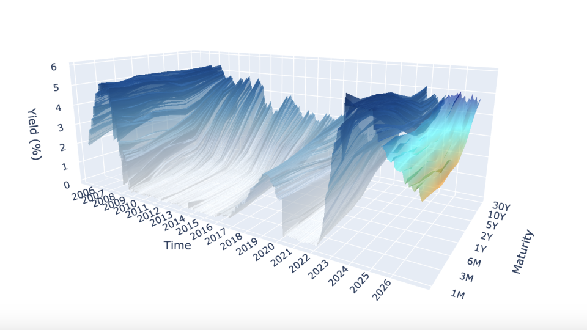
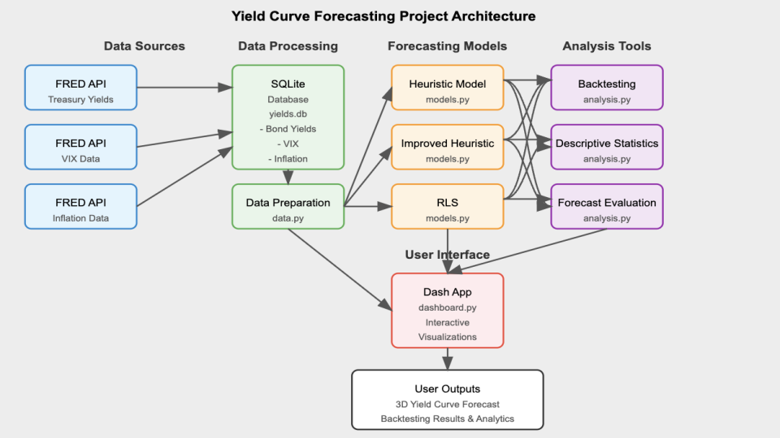
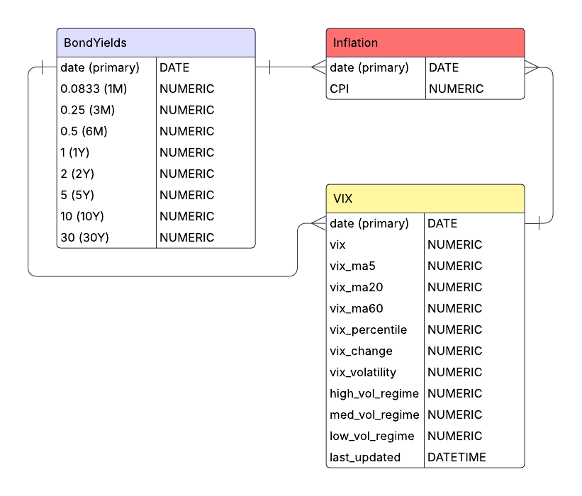
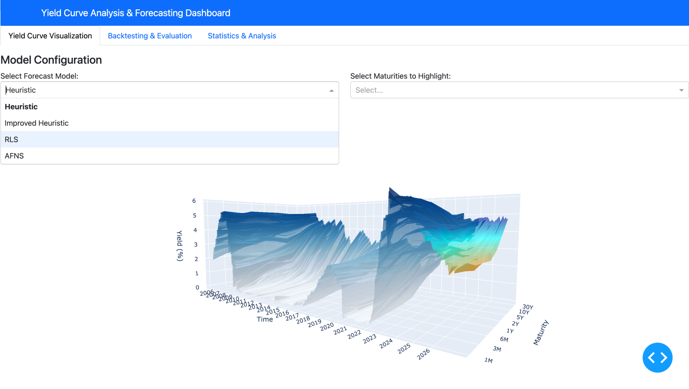

def fetch_treasury_yields(start_date, end_date):
"""
Fetch Treasury yield data from FRED for various maturities.
Returns:
DataFrame with date index and columns for different maturities.
"""
logger.info(f"Fetching Treasury yields from {start_date} to {end_date}")
# FRED series IDs for different Treasury maturities
# Format: (maturity_label, series_id)
treasury_series = [
('T1M', 'DGS1MO'), # 1-Month Treasury Constant Maturity Rate
('T3M', 'DGS3MO'), # 3-Month Treasury Constant Maturity Rate
('T6M', 'DGS6MO'), # 6-Month Treasury Constant Maturity Rate
('T1', 'DGS1'), # 1-Year Treasury Constant Maturity Rate
('T2', 'DGS2'), # 2-Year Treasury Constant Maturity Rate
('T5', 'DGS5'), # 5-Year Treasury Constant Maturity Rate
('T10', 'DGS10'), # 10-Year Treasury Constant Maturity Rate
('T30', 'DGS30') # 30-Year Treasury Constant Maturity Rate
]
# Initialize dictionary to store series data
yields_data = {}
# Fetch each series
for label, series_id in treasury_series:
try:
# Get data from FRED API
series = fred.get_series(series_id, start_date, end_date)
if not series.empty:
yields_data[label] = series
logger.info(f"Successfully fetched {label} yields ({len(series)} observations)")
else:
logger.warning(f"No data returned for {label} (series ID: {series_id})")
except Exception as e:
logger.error(f"Error fetching {label} (series ID: {series_id}): {str(e)}")
# Convert to DataFrame
if yields_data:
df = pd.DataFrame(yields_data)
df.index.name = 'date'
# Convert index to datetime if not already
if not isinstance(df.index, pd.DatetimeIndex):
df.index = pd.to_datetime(df.index)
return df
else:
logger.error("Failed to fetch any Treasury yield data")
return pd.DataFrame()
Introduction
A yield curve is a graph that shows the interest rates (yields) of bonds with different maturity dates. It typically represents U.S. Treasury bonds and helps indicate the overall health of the economy.
- Short-term bonds (e.g., 3 months) usually have lower yields.
- Long-term bonds (e.g., 30 years) usually have higher yields (risk premium)
Shapes tell economic stories:
- Normal (upward): Healthy economy
- Flat: Economic transition
- Inverted: Recession signal
This project aims to model the yield curve in three-dimensions, as well as forecast yields using exogenous variables to formulate “regime-awareness” for classic forecasting models (i.e. Nelson-Siegel Models).
Project Overview
The project is split up into three main categories:
- Data Management: The acquisition of data from FRED API (Yield data, CPI, VIX), SQLite database formation, and SQL query functions.
- Forecasting Models (Mathematical Modeling): The forecasting models (dynamic exponential decay, AFNS, etc.).
- Backtesting & Analysis: The functions used to backtest each model and calculate the error metrics/statistics.
There are other important modules such as the plotting module and dash app module, but for the sake of the entirety of the project, the forecasting module was the main focus of work and research.

At the project’s foundation, lies an SQLite database that stores historical yield curve data, inflation metrics, and market volatility indices. The data layer (data.py) handles all the database operations using parameterized queries and includes ETL (Extract, Transform, Load) functionality. This ensures that time-based and maturity-related data is cleaned up and standardized, making it ready for use down the line. The mathematical modeling layer (models.py and utils.py) implements the Nelson-Siegel framework and “regime-awareness” forecasting algorithms, containing the complex mathematics of yield curve dynamics. The analytics layer (analysis.py) provides backtesting capabilities and statistical analysis functions that operate on both historical and forecasted data.
The project’s visualizations and user interactions are built on Dash, implementing a reactive programming model where UI components respond to user inputs through callback functions. This setup ensures a smooth and connected workflow, where any changes you make to the parameters in the interface automatically flow through the entire system. It triggers the necessary database queries, runs the right modeling functions, and updates the visualizations seamlessly—all in real time. The application’s state management system ensures that computational resources are used efficiently, with heavy operations like backtesting performed only when explicitly requested.
Technical Components
The main technical components include:
- Creating and Interacting with a SQL Database
- Complex Data Visualization via Plotly
- Mathematical Modeling
- Building a Dynamic Dash App
Creating and Interacting with a SQL Database
This project sets up a data storage system using an SQLite database, complete with custom query functions designed to pull time-based financial data efficiently. Unlike simpler methods like relying on CSV files, this database is structured to fetch only the exact data required for specific analyses. This approach minimizes memory usage, especially when working with large datasets that cover several decades.
The database is organized into separate tables for yield curve data, market volatility metrics, and inflation, all using consistent date formats to ensure everything lines up correctly over time. To keep things secure and flexible, the data access layer uses parameterized queries, which guard against SQL injection risks while offering versatile ways to retrieve the data you need.
The first step in the project was to fetch the data from FRED API. The update_db.py module contains multiple functions to fetch data but we’ll focus on fetching the yield data:
The main challenge stemmed from dealing with multiple yield maturities fetched from the FRED API. Since variable names can’t start with an integer, I had to rename each maturity by adding a “T” at the beginning. This adjustment later necessitated a custom function to convert these specially named maturity variables back into numerical values for analysis. Additionally, the data had to be concatenated and reshaped (using a “melt” operation) to ensure it was properly structured for the data.py module to query and process efficiently.
The data.py module houses all the query functions, some of which require more than just querying between two dates. An example of this is the get_historical_inflation() function, which not only retrieves CPI data but also computes year-over-year inflation rates directly in the query:
def get_historical_inflation(db_file: str, start_date: str, end_date: str) -> pd.DataFrame:
"""
Fetch historical inflation data and compute Year-over-Year (YoY) CPI change.
Args:
db_file (str): Path to SQLite database.
start_date (str): Start date in 'YYYY-MM-DD' format.
end_date (str): End date in 'YYYY-MM-DD' format.
Returns:
pd.DataFrame: DataFrame with ['date', 'CPI', 'inflation_rate'].
"""
query = """
SELECT date, CPI
FROM Inflation
WHERE date BETWEEN ? AND ?
ORDER BY date ASC
"""
try:
with sqlite3.connect(db_file) as conn:
df = pd.read_sql_query(query, conn, params=(start_date, end_date))
df = df.sort_values("date")
df["inflation_rate"] = df["CPI"].pct_change(12) * 100 # Compute YoY inflation rate
return df.dropna()
except Exception as e:
print(f"Error querying inflation data: {e}")
return pd.DataFrame()
All in all, the data management architecture is relatively straightforward, with importing and handling our financial time-series data as the main goal. The database currently has three tables for yields, CPI, and VIX data but can easily be expanded to include more exogenous variables to incorporate into improving the “regime-awareness” hypothesis.
Complex Data Visualization via Plotly
The project implements sophisticated three-dimensional visualizations using Plotly, creating interactive representations of yield curve surfaces that evolve over time. The 3D visualization features both historical as well as the forecasted yields. Utilizing the 3D surface visualizations in this way, allow us to go beyond two-dimensional charts to represent the multi-dimensional nature of the yield curve.
The core visualization function creates a 3D surface representation where:
- The X-axis represents different maturities (from 1-month to 30-year)
- The Y-axis represents time (both historical and forecasted periods)
- The Z-axis represents yield values
The visualization module plotting.py implements a custom 3D surface generation function that creates topographical representations of yield curves for both forecasted and historical data:
def generate_surface_plot(forecast_model, selected_maturities, db_file, start_date, end_date, vix_data=None):
"""Creates a 3D surface visualization of historical and forecasted yield curves.
Purpose:
Generates an interactive 3D surface plot showing the evolution of the yield curve
over time, including both historical data and forward-looking model forecasts.
Selected maturities can be highlighted with individual time series lines.
Args:
forecast_model: Model name to use for forecasting ("Heuristic",
"ImprovedHeuristic", or "RLS").
selected_maturities: List of maturities to highlight with individual lines.
db_file: Path to SQLite database with yield data.
start_date: Start date for historical data in 'YYYY-MM-DD' format.
end_date: End date for historical data in 'YYYY-MM-DD' format.
vix_data: Optional DataFrame with VIX data for forecast enhancement.
Returns:
go.Figure: Plotly figure object containing the 3D yield curve visualization.
Raises:
Exception: If an error occurs during plot generation.
"""
try:
# Process historical data with memory efficiency in mind
historical_df = data.prepare_data(db_file, start_date, end_date)
historical_df.index = pd.to_datetime(historical_df.index)
# For large datasets, subsample to improve performance while preserving trends
if len(historical_df) > 200:
historical_df = historical_df.iloc[::2] # Take every other row
# Prepare maturity data for consistent plotting
available_maturities = [round(float(col), 4) for col in historical_df.columns]
sorted_maturities = sorted(available_maturities, reverse=True)
historical_df = historical_df.reindex(columns=config.MATURITIES_LIST)[sorted_maturities]
# Convert dates to numeric values for 3D plotting
base_date = historical_df.index.min()
hist_dates_numeric = (historical_df.index - base_date).days
# Create meshgrid for 3D surface - positions represent maturity indices
positions = np.arange(len(sorted_maturities))
X_hist, Y_hist = np.meshgrid(positions, hist_dates_numeric)
Z_hist = historical_df.fillna(0).values
# Adapt forecast length based on visualization complexity
forecast_steps = 24 # Standard value: 2-year forecast
if len(selected_maturities) > 5:
# Shorter forecast horizon when displaying many maturity lines
forecast_steps = 12
# Generate forecast data using the selected model
forecast_df = models.forecast_yield_curve(
forecast_model, db_file, start_date, end_date,
sorted_maturities, forecast_steps=forecast_steps, vix_data=vix_data
)
# Prepare forecast data for 3D visualization
forecast_df["maturity_numeric"] = forecast_df["maturity_numeric"].astype(float)
forecast_pivot = forecast_df.pivot(index="date", columns="maturity_numeric", values="yield")
forecast_pivot = forecast_pivot.reindex(columns=sorted_maturities).ffill().bfill().fillna(0)
# Convert forecast dates to numeric values for plotting
forecast_dates_numeric = (forecast_pivot.index - base_date).days.values
X_fore, Y_fore = np.meshgrid(positions, forecast_dates_numeric)
Z_fore = forecast_pivot.values
# Adapt surface opacity based on selection mode
surface_opacity = 0.05 if selected_maturities else 0.6
# Create the base figure
fig = go.Figure()
# Add historical yield curve surface (blue gradient)
fig.add_trace(go.Surface(
x=X_hist, y=Y_hist, z=Z_hist,
colorscale="Blues",
opacity=surface_opacity,
name="Historical Yield Curve",
showscale=False
))
# Add forecast yield curve surface (orange-cyan-blue gradient)
custom_scale = [[0, 'darkorange'], [0.5, 'cyan'], [1, 'darkblue']]
fig.add_trace(go.Surface(
x=X_fore, y=Y_fore, z=Z_fore,
colorscale=custom_scale,
opacity=surface_opacity,
name="Forecast Yield Curve",
showscale=False
))
# Add individual time series lines for selected maturities
if selected_maturities:
for m in selected_maturities:
m_val = round(float(m), 4)
if m_val not in sorted_maturities:
continue
# Extract historical data for this maturity
hist_ts = historical_df[m_val].reset_index()
hist_ts.rename(columns={m_val: "yield"}, inplace=True)
# Get forecast for this specific maturity
forecast_ts = models.forecast_individual_maturity(
db_file, start_date, end_date, m_val,
model=forecast_model, vix_data=vix_data
)
# Combine historical and forecast for continuous visualization
combined_ts = pd.concat([hist_ts, forecast_ts], ignore_index=True)
combined_ts.sort_values("date", inplace=True)
combined_ts['date_str'] = combined_ts['date'].dt.strftime("%m-%Y")
combined_ts['date_numeric'] = (combined_ts['date'] - base_date).dt.days
# Add the maturity-specific line to the 3D plot
pos = sorted_maturities.index(m_val)
fig.add_trace(go.Scatter3d(
x=[pos] * len(combined_ts), # Fixed x position for this maturity
y=combined_ts['date_numeric'], # Date position
z=combined_ts['yield'], # Yield values
mode='lines',
line=dict(color='black', width=1.1),
name=f"{int(m_val)}Y" if m_val >= 1 else f"{int(round(m_val*12))}M",
# Enhanced hover information for financial analysis
hovertemplate="<b>Maturity:</b> " + f"{m_val} years" +
"<br><b>Date:</b> %{customdata[0]}" +
"<br><b>Yield:</b> %{z:.2f}%",
customdata=combined_ts[['date_str']].values
))
# Configure time axis with year labels
end_date_val = forecast_pivot.index.max() if not forecast_pivot.empty else historical_df.index.max()
year_ticks = pd.date_range(start=base_date, end=end_date_val, freq='YS')
y_tick_vals = [(date - base_date).days for date in year_ticks]
y_tick_text = [date.strftime("%Y") for date in year_ticks]
# Set layout with optimized aspect ratio and clear axis labels
fig.update_layout(
scene=dict(
xaxis=dict(
title="Maturity",
tickvals=list(range(len(sorted_maturities))),
ticktext=[f"{int(m)}Y" if m >= 1 else f"{int(round(m*12))}M" for m in sorted_maturities]
),
yaxis=dict(
title="Time",
tickvals=y_tick_vals,
ticktext=y_tick_text
),
zaxis=dict(title="Yield (%)"),
aspectratio=dict(x=1, y=2, z=0.7)
),
title_text=f"Historical & Forecast Yield Curves ({forecast_model} Model)",
margin=dict(l=0, r=0, b=10, t=30),
legend=dict(
yanchor="top",
y=0.99,
xanchor="left",
x=0.01
)
)
# Clean up large intermediate objects to free memory
del X_hist, Y_hist, Z_hist, X_fore, Y_fore, Z_fore
gc.collect()
return fig
except Exception as e:
# Log the error for debugging
print(f"Error in generate_surface_plot: {str(e)}")
raiseSome of the challenges that arose when plotting the 3D yield curve came from concatenating the historical and forecasted yield graphs. Making sure that the forecasting graph exhibited continuity (no large gap) was a reoccurring issue.
One of the features I wanted the 3D visualization to have was the ability for users to select a specific maturity and be able to view it without the obstruction of the entire three-dimensional plot. Thus, the rendering engine also dynamically adjusts opacity levels based on user-selected maturity, creating a focus effect where the surface becomes semi-transparent when specific yield curves are highlighted.
This complex visualization approach transforms numerical yield data into an intuitive visual format that makes patterns, anomalies, and trends immediately apparent (financial shocks like COVID-19 can be easily visible).
Beyond the 3D visualizations, the plotting.py module contains specialized plot functions for yield curve spreads, inversion analysis, and volatility correlations. These visualizations implement custom color-coding schemes that map domain-specific concepts like recession probabilities to visual elements that financial analysts can readily interpret. These visualizations accompany the main 3D yield curve to better understand how they work with yield curve dynamics.
Mathematical Modeling
The core of the application lies in its mathematical modeling capabilities. The system implements multiple forecasting approaches, each with specific strengths for different market environments.
We’ll focus on the “Improved-Heuristic” model which utilized CPI and VIX data to create factors used in a simple decay function:
\[Y_{t+h,m} = Y_{t,m} \cdot (1-d_{m,t})^h + \alpha_{m,h} \cdot (M_{m,t} - Y_{t,m} \cdot (1-d_{m,t})^h) + \epsilon_{t,h,m}\]
Where: - \(Y_{t,m}\) is the yield at time \(t\) for maturity \(m\) - \(h\) is the forecast horizon in months - \(d_{m,t}\) is the effective decay rate, varying by maturity and time - \(\alpha_{m,h}\) is the horizon-dependent mean reversion strength - \(M_{m,t}\) is the maturity-specific mean reversion target - \(\epsilon_{t,h,m}\) is a noise term based on historical volatility
Maturity-Specific Decay Rates
The model implements non-linear scaling of decay rates across the curve:
\[d_{m,t} = d_{max} - (d_{max} - d_{min}) \cdot \left(\frac{m - m_{min}}{m_{max} - m_{min}}\right)^{\gamma_m} + \beta_{infl,t}\]
Where: - \(d_{max}\) is the maximum decay rate (for shortest maturities) - \(d_{min}\) is the minimum decay rate (for longest maturities) - \(\gamma_m\) is a maturity-dependent power factor (0.7 for short maturities, 0.9 for longer ones) - \(\beta_{infl,t}\) is an inflation-based adjustment
The model adjusts decay rates across the curve, applying faster decay for short-term rates and slower decay for long-term rates:
# Compute base decay rate with non-linear scaling for short-term rates
if m <= 1: # 1 year or less - faster decay initially
base_decay = d_max - (d_max - d_min) * np.power((m - m_min) / (m_max - m_min), 0.7)
else:
base_decay = d_max - (d_max - d_min) * np.power((m - m_min) / (m_max - m_min), 0.9)Inflation and Volatility Adjustments
The inflation adjustment term \(\beta_{infl,t}\) is calculated as:
\[\beta_{infl,t} = \begin{cases} -0.08 - 0.02 \cdot I'_t & \text{if } I_t > 4\% \text{ and } I'_t > 0 \\ -0.05 - 0.01 \cdot I'_t & \text{if } I_t > 3\% \text{ and } I'_t > 0 \\ -0.03 & \text{if } 1\% \leq I_t < 3\% \\ -0.015 & \text{if } 0 \leq I_t < 1\% \\ -0.005 + 0.005 \cdot |I'_t| & \text{if } I_t < 0\% \text{ and } I'_t < 0 \end{cases}\]
Where: - \(I_t\) is the current inflation rate - \(I'_t\) is the inflation momentum (change over recent periods)
This is further adjusted by market volatility:
\[\beta_{infl,t} = \beta_{infl,t} \cdot V_f\]
Where \(V_f\) is a volatility adjustment factor:
\[V_f = \begin{cases} 1.3 & \text{if VIX} > 30 \\ 1.1 & \text{if VIX} > 20 \\ 0.9 & \text{if VIX} < 15 \\ 1.0 & \text{otherwise} \end{cases}\]
Here, we implement the math using simple else-if statements to refine our bias estimator:
# Base bias calculation with momentum factor - higher inflation = more negative bias
if recent_inflation > 4: # Very high inflation
base_bias = -0.08 - (0.02 * inflation_trend if inflation_trend > 0 else 0)
elif recent_inflation > 3: # High inflation
base_bias = -0.05 - (0.01 * inflation_trend if inflation_trend > 0 else 0)
elif recent_inflation >= 1: # Normal inflation
base_bias = -0.03Dynamic Mean Reversion
The mean reversion target \(M_{m,t}\) combines historical averages with economic factors:
\[M_{m,t} = w_{s,m} \cdot \mu_{s,m} + w_{m,m} \cdot \mu_{m,m} + w_{l,m} \cdot \mu_{l,m}\]
Where: - \(\mu_{s,m}\), \(\mu_{m,m}\), \(\mu_{l,m}\) are short, medium, and long-term historical means - \(w_{s,m}\), \(w_{m,m}\), \(w_{l,m}\) are maturity-specific weights
This target is then adjusted by economic factors:
\[M_{m,t} = M_{m,t} \cdot (1 + \delta_m \cdot E_t)\]
Where: - \(E_t\) is a composite economic factor score - \(\delta_m\) is a maturity-dependent sensitivity (ranging from 0.01 to 0.05)
Noise Generation
The noise term incorporates: 1. Historical volatility 2. Maturity-specific scaling 3. Time horizon effects 4. Volatility regime adjustments
\[\epsilon_{t,h,m} = \sigma_{m} \cdot e^{-0.2m} \cdot \sqrt{\min(1, \frac{h}{12})} \cdot V_f \cdot \mathcal{N}(0.002, 1)\]
Where: - \(\sigma_m\) is the historical standard deviation for maturity \(m\) - \(e^{-0.2m}\) provides exponential decay in noise with maturity - The square root term increases noise with forecast horizon - \(V_f\) is the volatility regime factor - \(\mathcal{N}(0.002, 1)\) is a slightly biased normal distribution
This mathematical framework enables the model to adapt to changing market conditions while maintaining economically reasonable forecasts across different maturities and time horizons.
In addition to all this, we can classify the variables into simple regimes by incorporating the yield curve spreads (calculated by taking the difference of yields between long and short term maturities):
# Determine curve regime based on inversion status and change direction
if is_inverted:
if spread_change > 0.05:
# Inverted but steepening - often signals end of tightening
regime_info['curve_regime'] = "inverted_steepening"
else:
# Strongly inverted - typical of late-cycle
regime_info['curve_regime'] = "inverted_flat"
else:
if spread_change > 0.1:
# Rapidly steepening - often signals easing
regime_info['curve_regime'] = "steepening"
elif spread_change < -0.1:
# Flattening - typical of tightening
regime_info['curve_regime'] = "flattening"
else:
regime_info['curve_regime'] = "normal"This regime awareness allows the model to account for business cycle dynamics, adjusting forecasts based on whether the market is in a tightening cycle, easing cycle, or transitioning between regimes.
Thus, combining all the exogenous variables with an easier-to-work-with model (exponential decay) was the focus of research throughout the majority of this project. While results are still not on par with the widespread statistical forecasting models (AFNS), the error metric results are seemingly decent enough that further research likely could reveal a statistically significant improvement in yield curve forecasting.
Building a Dynamic Dash App
The Dash application integrates all the components into a cohesive, interactive user interface. It’s built using a modular architecture that separates concerns between data access, model computation, and presentation, allowing for easier maintenance and future enhancements. The application features three main tabs:
- Visualization Tab: Interactive 3D visualization of historical and forecasted yield curves
- Backtesting Tab: Model evaluation and performance metrics across different time horizons
- Analysis Tab: Statistical analysis, spread visualization, and market regime detection
The application uses a modular design pattern that separates concerns between different functional areas:
(Note: The code for the Dash app in dashboard.py is long, thus snippets will be highlighted)
def create_app():
"""Creates and configures the Dash application for yield curve analysis."""
# Initialize Dash app with Bootstrap styling
app = Dash(__name__, external_stylesheets=[dbc.themes.BOOTSTRAP])
# Define the application layout with multiple tabs
app.layout = html.Div([
# Navigation header
dbc.NavbarSimple(
brand="Yield Curve Analysis & Forecasting Dashboard",
brand_href="#",
color="primary",
dark=True,
),
# State storage components
dcc.Store(id='current-model-store', data='Heuristic'),
dcc.Store(id='selected-maturities-store', data=[]),
dcc.Store(id='backtest-state-store', data={}),
dcc.Store(id='viz-needs-refresh', data=False),
# Main tab structure
dbc.Tabs([
# Tab 1: 3D Visualization
dbc.Tab(label="Yield Curve Visualization", tab_id="tab-visualization", children=[...]),
# Tab 2: Backtesting
dbc.Tab(label="Backtesting & Evaluation", tab_id="tab-backtest", children=[...]),
# Tab 3: Analysis
dbc.Tab(label="Statistics & Analysis", tab_id="tab-analysis", children=[...])
], id="main-tabs")
])
# Further code
# ...
return appThe layout structure follows a hierarchical organization with tabs, rows, columns, and individual components, all styled with Bootstrap for a professional appearance.
One of the most important aspects of the Dash app is how it manages state between user interactions:
# State storage components
dcc.Store(id='current-model-store', data='Heuristic'),
dcc.Store(id='selected-maturities-store', data=[]),
dcc.Store(id='backtest-state-store', data={}),
dcc.Store(id='viz-needs-refresh', data=False),These dcc.Store components serve as client-side state containers that persist between callback executions. This approach:
- Reduces redundant computations by storing user selections and current state
- Prevents unnecessary re-rendering of complex visualizations
- Enables communication between different parts of the application
For instance, when a user runs a backtest, the application stores the results in backtest-state-store and sets viz-needs-refresh to True, which triggers a refresh of the visualization when the user returns to that tab.
This was implemented in order to prevent issues with backtests potentially interfering with the 3D visualization.
The application uses a sophisticated callback system to handle user interactions. We’ll look at one of the key callbacks used to change visualizations based on user-selected forecasting models:
@app.callback(
[Output("yield-curve-graph", "figure"),
Output("current-model-store", "data"),
Output("selected-maturities-store", "data")],
[Input("forecast-model-dropdown", "value"),
Input("maturities-dropdown", "value")],
[State("current-model-store", "data"),
State("selected-maturities-store", "data")],
prevent_initial_call=False
)
def update_figure(forecast_model, selected_maturities, current_model, stored_maturities):
"""Updates the 3D yield curve visualization based on user selections."""
# Use fallback values if inputs are empty/None
if forecast_model is None or forecast_model == "":
forecast_model = current_model or "Heuristic"
if selected_maturities is None:
selected_maturities = stored_maturities or []
# Generate the 3D visualization with error handling
try:
fig = plotting.generate_surface_plot(
forecast_model,
selected_maturities,
config.DB_FILE,
config.DEFAULT_START_DATE,
config.DEFAULT_END_DATE,
vix_data
)
return fig, forecast_model, selected_maturities
except Exception as e:
# Create error message figure
fig = go.Figure()
fig.add_annotation(text=f"Error: {str(e)}",
xref="paper", yref="paper",
x=0.5, y=0.5, showarrow=False)
return fig, forecast_model, selected_maturitiesThis callback demonstrates several important principles:
- Multiple outputs: The callback updates both the visualization and store components in a single operation
- State usage: It uses current state values as fallbacks, ensuring the application behaves predictably
- Error handling: The callback catches exceptions and provides user-friendly error messages
- Parameter delegation: The actual visualization work is delegated to the plotting module

This interactive application makes complex yield curve analysis accessible and intuitive, allowing users to quickly switch between different views, models, and analytical tools without requiring deep technical knowledge of the underlying implementation details.
Conclusion and Ethical Considerations
The Yield Curve Forecasting tool provides a comprehensive platform for fixed income analysis, combining sophisticated mathematical modeling with interactive visualizations. The system’s ability to incorporate market regimes, inflation data, and volatility metrics produces forecasts that adapt to changing economic conditions. The backtesting framework provides transparency about model performance, allowing users to make informed decisions based on historical accuracy.
Ethics
While the tool provides valuable insights for users ranging from intermediate investors to fixed income analysts, several ethical considerations are important to acknowledge:
- Model Transparency: The application makes clear that all forecasts are probabilistic in nature and subject to uncertainty. The backtesting framework helps users understand the limitations of each model, preventing overconfidence in predictions.
- Financial Access Implications: Tools that enhance fixed income analysis primarily benefit institutional investors and may widen the knowledge gap between professional and retail investors. This raises questions about equitable access to financial technology.
- Market Impact: If widely adopted, model-based forecasting tools could potentially contribute to herding behavior in markets if many participants use similar models or strategies. The application’s multiple models with different approaches help mitigate this risk.
- Data Privacy: While the application uses public data, expansion to include proprietary or alternative data sources would require careful consideration of data privacy and usage rights.
- Regulatory Compliance: Users must ensure that any investment decisions made using the tool comply with relevant regulations, particularly regarding model validation requirements for financial institutions.